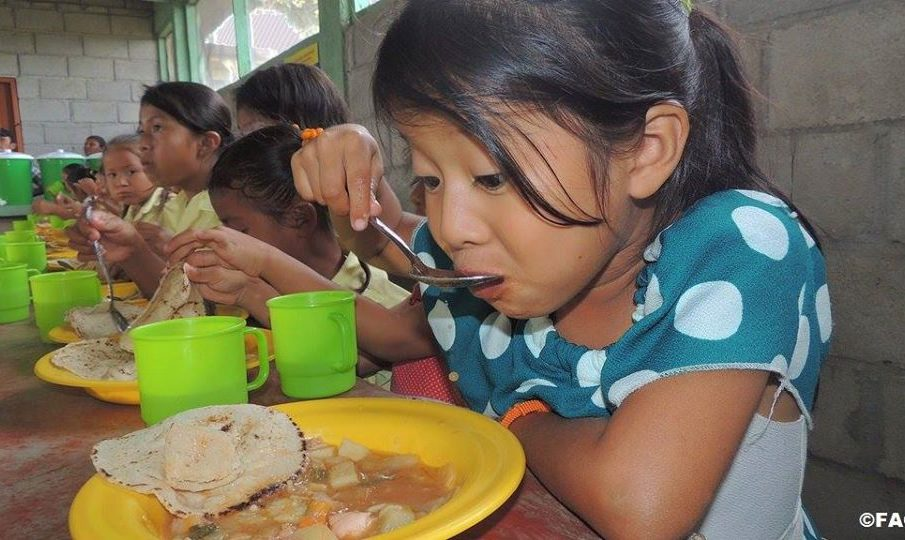
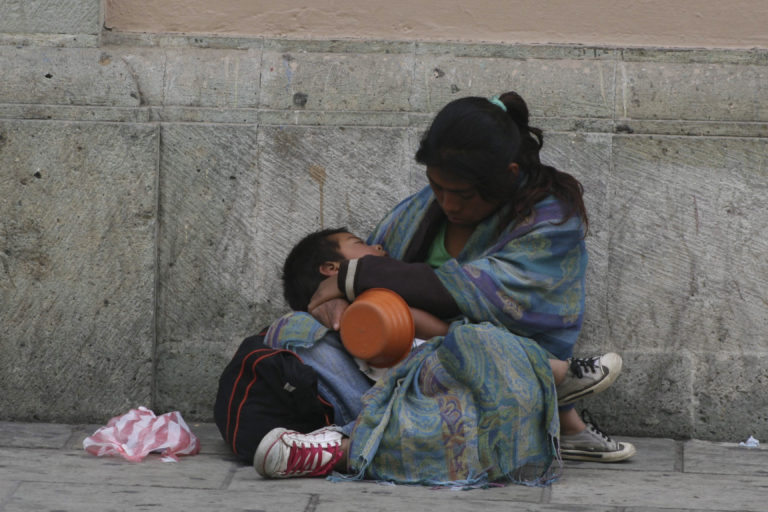

Nuestro objetivo actual en la organización para erradicar el hambre en México (ORPEHM) es implementar programas de alimentacion en los lugares y personas mas desfavorecidos en mexico, en ORPEHM observamos que existen muchas personas con problemas alimenticios y decidimos poner manos en accion para trabajar en este problema y erradicarlo de ierras nacionales, espezamos implementando puestos en colonias en el sur del pais que esten asoldadas y casi olvidadas por el estado mexicano, alimentaremos a los que esten en situacion de calle y los sacaremos de ahi, unidos todo es posible.

Nuestra problematica actual es el hambre en muchos mexicanos, lo que nos da mas problemas es la poca empatia en mexico hacia los mexicanos, es muy complicado para nosotros llevar comida a los desfavorecidos en mexico si los mexicanos no nos ayudan, esta falta de empatia nos deja inmoviles en muchas regiones y nos paraliza nuestra eficiencia como organizacion, solo que asi como hay muchos que no ayudan tambien hay muchos que si ayudan, por eso es importante que se nos unan cada vez mas mexicanos a la lucha contra el hambre

Nuestra meta a futuro es no solo haber alimentado a los necesitados, es haber hecho una solucion permanente a este problema, no es nada util dar de comer una vez y al dia siguiente dejarlos con hambre, nosotros planeamos inovar en el sector alimenticio y social, ya que para que esto se cumpla al menos casi el 85% de las grandes ciudades de mexico deben colaborar para que el proyecto funcione eficientemente, el plan a futuro tambien abarca roformar los valores sociales de los mexicanos e incentivar la solidaridad unos con otros.
Nuestra primera solucion ejecitada para esta problematica es ser la principal competencia de SEGALMEX, la cual se esta viendo involucrada en el ojo del huracan periodistico debido a altas ineficiencias en sus programas, asi como lucrar con objetivos de caridad, esto nos pondria en una muy buena imagen a nivel nacional ya que al ofrecerles competencia, se verian obligados a ser mas eficientes si quieren sobrevivir como organizacion del estado, ya que se suele matar a estas organizaciones estatales ineficientes, asi tambien nos reduciriamos la carga de trabajo
Nuestra solucion mas apegada al futuro es colocar o incentivar una capaña de impuesto muy ligero, menos del 1% a productos alimenticios que sean super demandados a nivel nacional, asi como agrgar la misma cantidad de impuesto a productos que cuenten con IEPS, este dinero sera utilizado para financiar acciones de ORPEHM y garantizar el uso adecuado de los recursos recolectados, los impuestos agregados a esos productos son asi de bajos para incentivar la colaboracion voluntaria de la industria ya que no obligaremos a participar a nadie en esta campaña que agregue valor a los productos, esto con el objetivo de que el volumen de ingresos recibidos sea alto reflejando una alta recaudacion de recursos